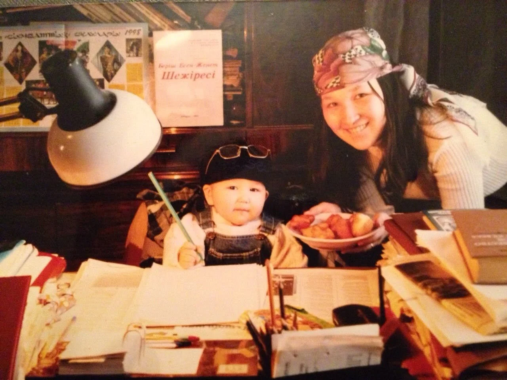
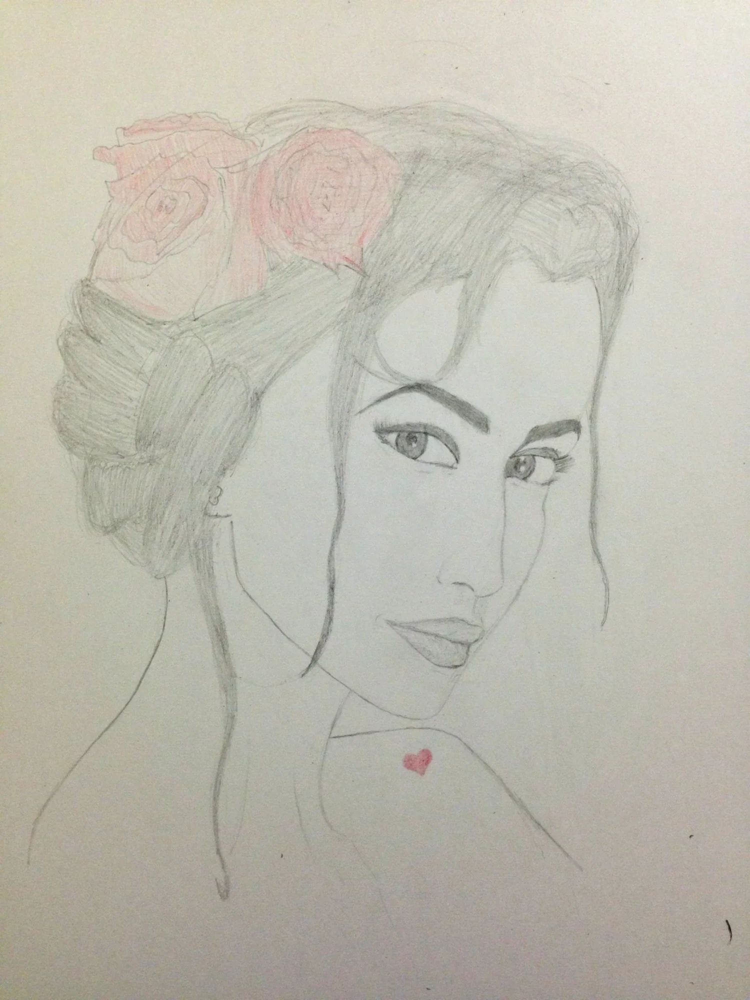
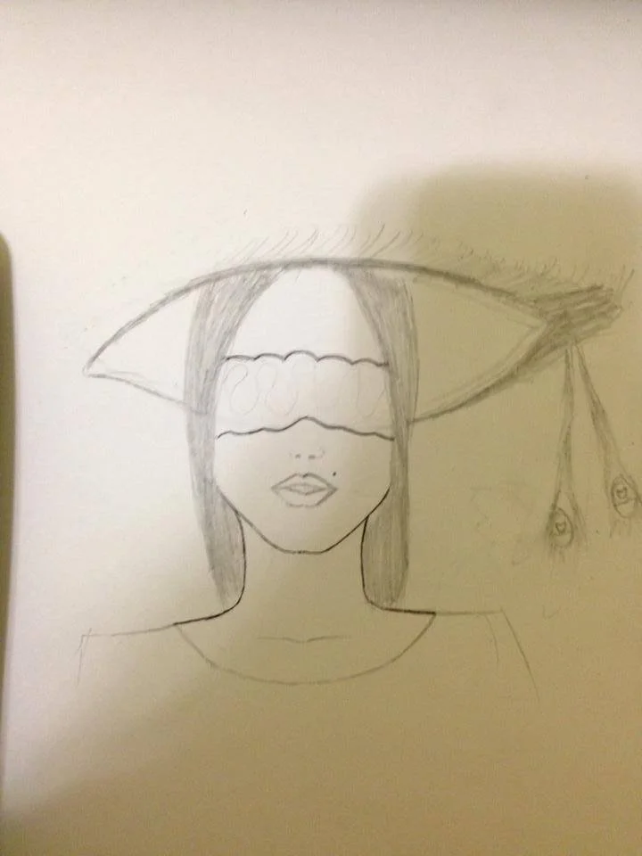
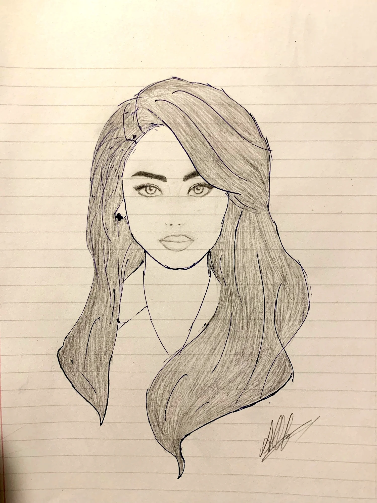
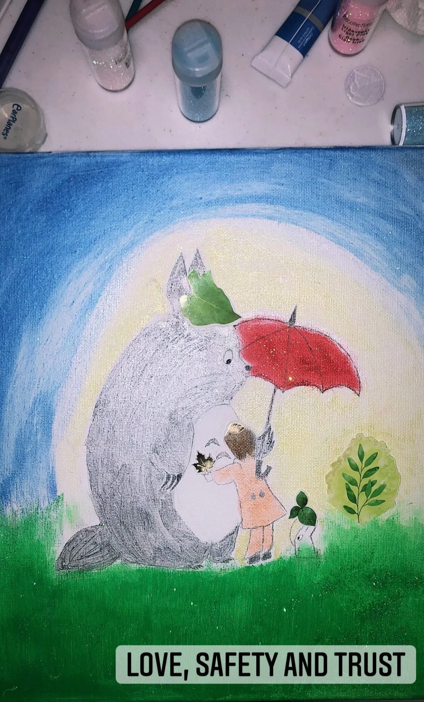
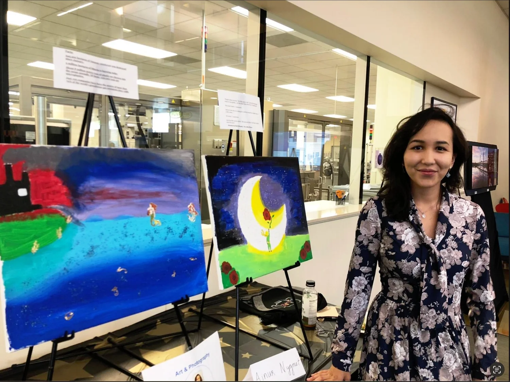
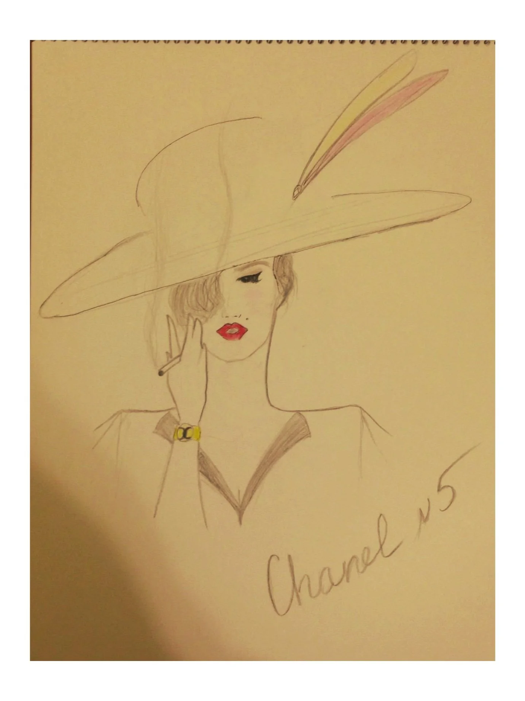
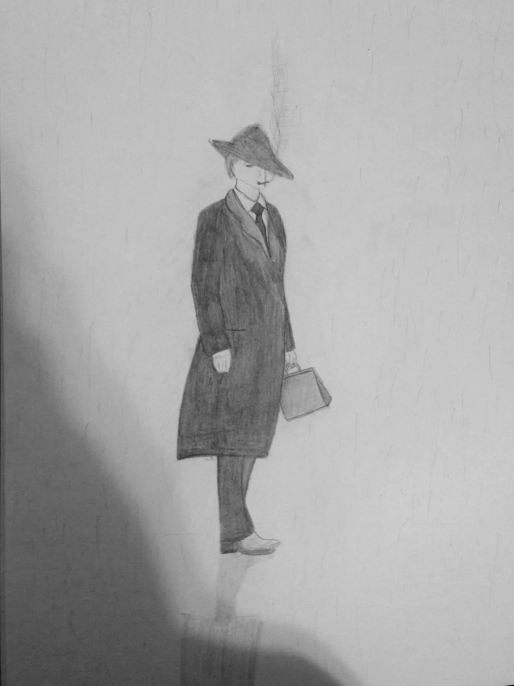
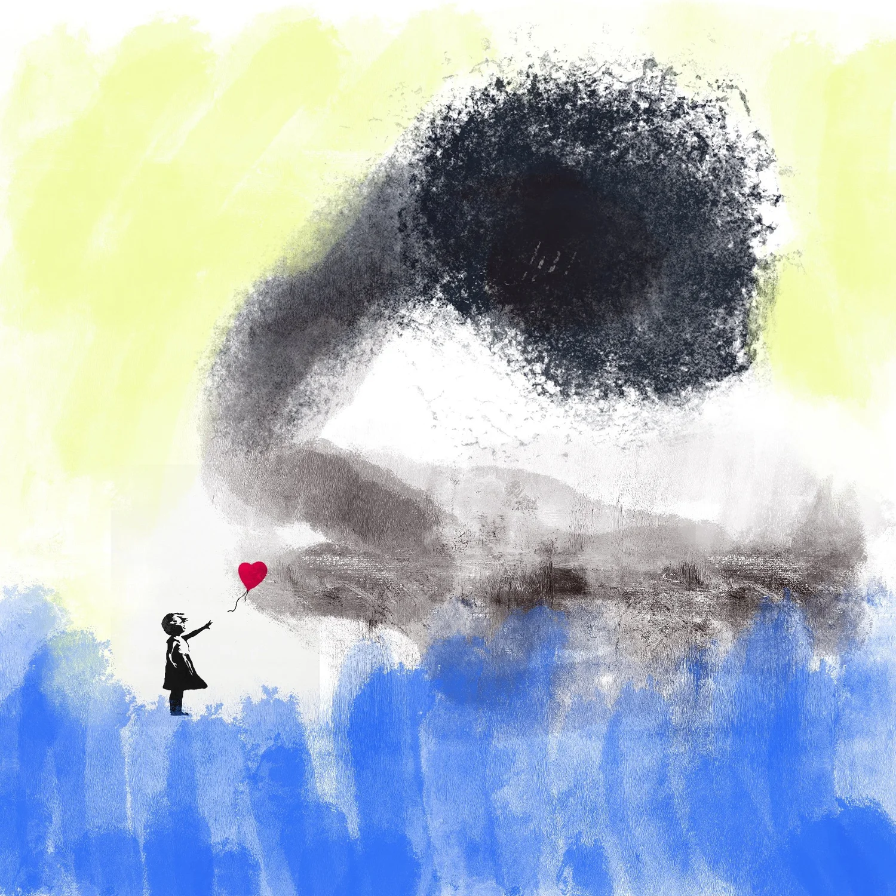
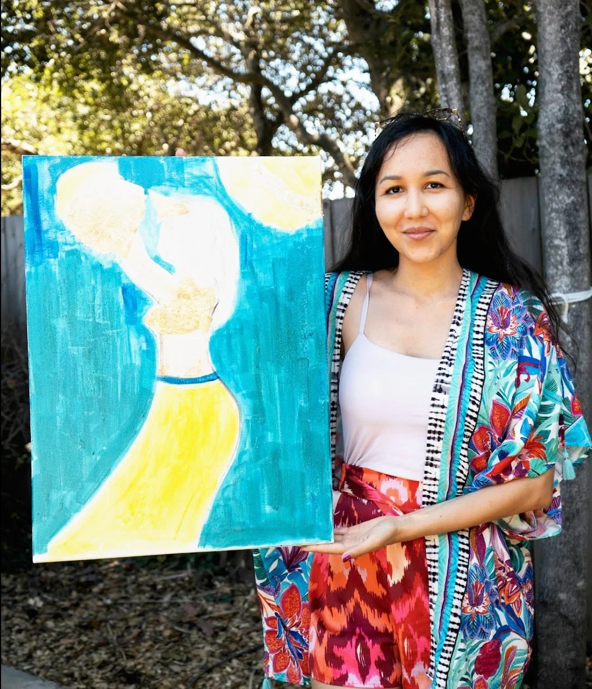

Art

Atyrau, Kazakhstan, 1998. Both of my grandfathers were history professors. Behind me is the Shezhire, our family's genealogical tree.
Secret Poetry
As a teenager I kept a secret poetry blog in Russian on Vkontakte called “Selling Feeling with Poetry.” I wrote poems inspired by the songs I listened to and the photos I stared at, paired with images and music. At that age I was inspired by Ludovico Einaudi.
Painting
I have loved drawing since I was a child, on walls, in books, everywhere.
In 2019 I won 2nd place at the Genentech Art Competition in Hillsboro, Oregon, with a painting inspired by Le Petit Prince: the little prince reaching for a rose under a glowing crescent moon, meant to bring back the wonder of seeing the world through a child's eyes.
Another piece depicts the struggle against pollution in our seas. My deepest heartbreak with the Caspian Sea is the helplessness of its animals, unable to save their environment from the pollution we create, so I painted mermaids swimming away in shock.


















“The meaning of life is to find your gift. The purpose of life is to give it away.”
Pablo Picasso